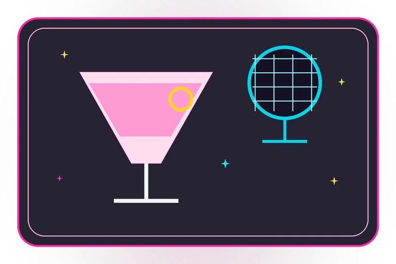
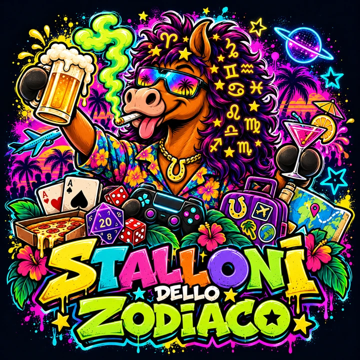
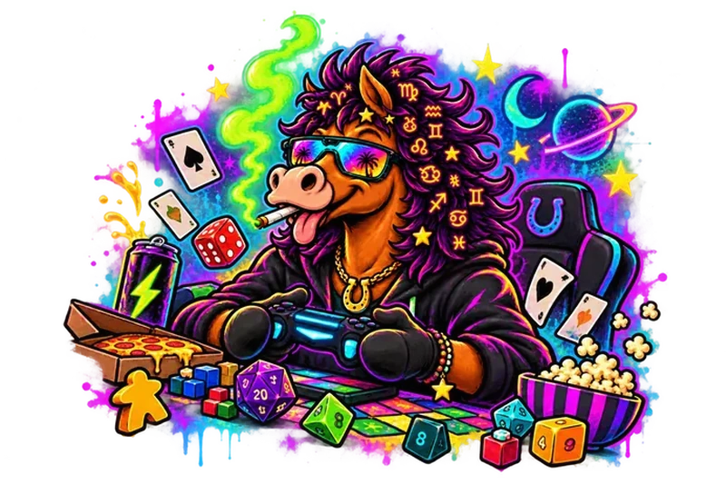
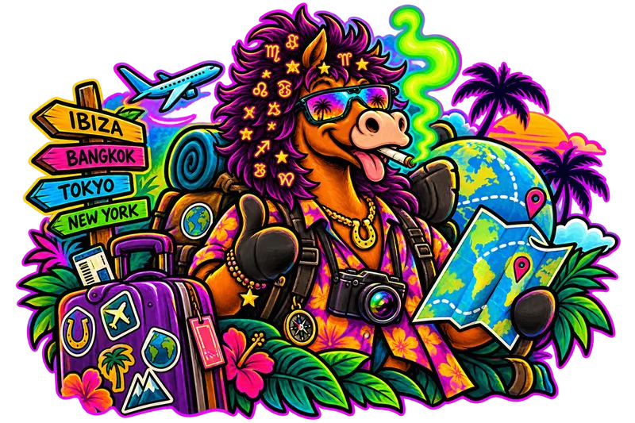
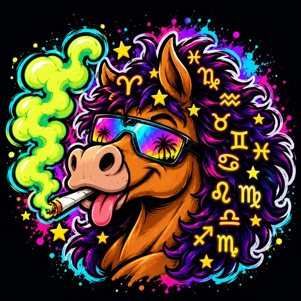

Serate
Aperitivi, uscite e chiacchiere che si allungano. Un modo semplice per conoscere gente nuova.

Serate · Giochi · Viaggi
Siamo gli Stalloni dello Zodiaco: gente presa bene, un tavolo da condividere e una scusa per uscire. Puoi arrivare anche senza conoscere nessuno.
Il nostro profilo è @stalloni_official
Una mandria, tante passioni
Dal primo aperitivo al prossimo weekend fuori: scegli da dove iniziare.

Aperitivi, uscite e chiacchiere che si allungano. Un modo semplice per conoscere gente nuova.

D&D, giochi da tavolo, carte e videogiochi. La prima partita? Te la spieghiamo noi.

Weekend fuori e avventure di gruppo. Una meta, lo zaino in spalla e qualcuno con cui partire.

Piacere, siamo gli Stalloni
Ci siamo conosciuti tra un tavolo da gioco e un bancone. Poi il gruppo è cresciuto: nuove persone, nuove idee e sempre un buon motivo per ritrovarsi.
Gli Stalloni dello Zodiaco sono questo: nerd e voglia di festa allo stesso tavolo. Se ti va di conoscere persone e fare qualcosa insieme, sei nel posto giusto.
Facciamo il primo passo?
Vieni a conoscerci su Instagram. Vuoi sapere cosa stiamo organizzando o presentarti prima di un’uscita? Apri il profilo e scrivici in Direct.
Apri @stalloni_officialDa lì puoi seguirci o toccare Messaggio. Qui non devi compilare nessun modulo.
Prima di conoscerci
No. Non c’è un numero fisso di QR da trovare: devi scovare quello giusto tra quelli sparsi per Savona. Il premio resta una sorpresa 👀
Certo. Scrivici su Instagram e presentati: non serve avere già amici nella mandria per partecipare.
Il nostro punto di contatto è @stalloni_official su Instagram. Scrivici in Direct per conoscere le prossime occasioni e i dettagli per partecipare.
Non c’è un abbonamento alla community. Uscite, locali e viaggi possono avere costi propri: chiedici i dettagli della singola attività prima di decidere.
No: puoi iniziare da zero. Dicci cosa ti incuriosisce e troviamo insieme da quale gioco partire.
Scegli il tuo alter ego. Nessun test d’ingresso: è solo per ridere.
La tua abilità speciale ti aspetta.
La scelta resta in questa pagina e non viene inviata né salvata.